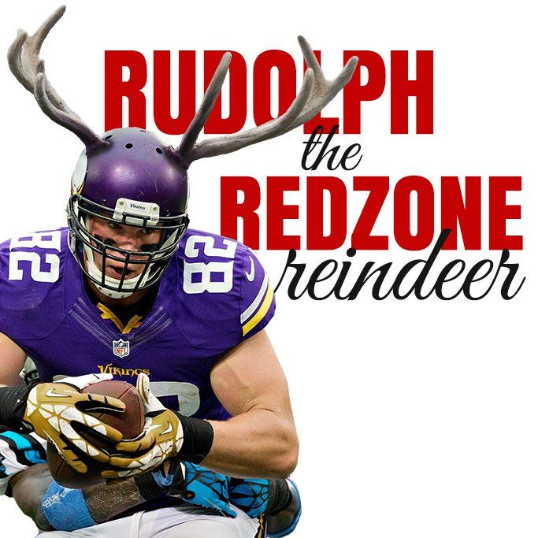

The Vikings

The Vikings are one of the greatest franchises in all of sports. The Minnesota Vikings are one of the oldest Franchises in the NFL with one of the most loyal franchises and is part of one of the toughest and most competitive divisions in football... The NFC North.
This website is dedicated to what makes the Minnesota Vikings the Vikings. Here we will be talking about different topics such as history of the franchise, key players of the past and today, historic moments, and have a fan application for you to fill out at the end.